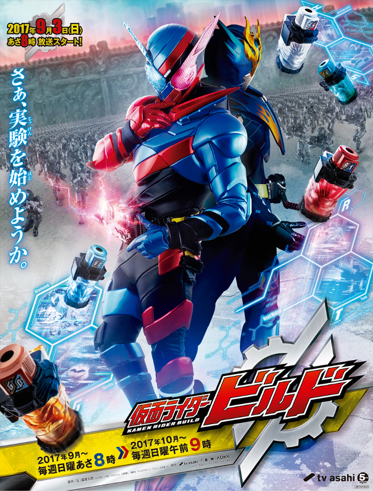

信用
原作：石之森章太郎
劇本：武藤將吾等
原作：石之森章太郎
劇本：武藤將吾等
假面騎士Build
播出週期 2017.9.3 - 2018.8.26 [共49集]
主題曲 Be The One / PANDORA feat.Beverly
“さぁ、実験を始めようか。”
從在火星上所發現的神秘之盒－「潘朵拉之盒」被打開的瞬間，突然地出現巨大牆壁開始了本作的故事。
被稱之為「天空之壁」的牆壁，將日本列島分割成三區塊，分別為「東都」、「西都」、「北都」及各自的首都也因此誕生了。 其中於「東都」上突然出現被命名為「SMASH」的未確認生命體....。
它們暗中地將人類逐漸逼進絕境。在那樣的SMASH 面前站出來一名青年－桐生戰兔，其腰上繫著腰帶，他的手上握有著不可思議的瓶子。
「變身！」 - 天才物理學家的青年變身成假面騎士Build，阻擋在SMASH 的面前！